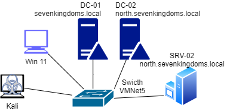

☠️ Laboratorio: BloodHound — Reconocimiento Ofensivo de Active Directory y Rutas de Escalada (Red & Blue Team)
Este laboratorio demuestra cómo instalar y usar BloodHound Community Edition (CE) para mapear la infraestructura de identidad de un dominio Active Directory, identificar rutas de ataque hacia Domain Admin y comprender las relaciones de privilegios entre objetos del dominio. El entorno de práctica es GOAD (Game of Active Directory) — un laboratorio vulnerable preconfigurado que replica errores comunes en redes corporativas reales.
Desde la perspectiva Red Team, veremos cómo un atacante con una sola cuenta de usuario estándar puede mapear completamente el dominio y calcular la ruta más corta hacia Domain Admin. Desde la perspectiva Blue Team, aprenderemos a detectar este reconocimiento y qué controles defensivos lo mitigan.
🛡️ Mapeo de Tácticas y Técnicas (MITRE ATT&CK)
A continuación se detallan las técnicas adversariales que se implementarán en este ejercicio:
| Táctica | Técnica | Código MITRE |
|---|---|---|
| Reconocimiento | Gather Victim Identity Information: Credentials | T1589.001 |
| Descubrimiento | Domain Trust Discovery | T1482 |
| Descubrimiento | Permission Groups Discovery: Domain Groups | T1069.002 |
| Descubrimiento | Account Discovery: Domain Account | T1087.002 |
| Movimiento Lateral | Use Alternate Authentication Material | T1550 |
🏗️ Escenario y Arquitectura de Red

El laboratorio opera sobre tres máquinas virtuales Windows Server y tu Kali Linux existente, todos conectados en una red interna aislada:
| VM | Nombre | Dominio | IP | Rol |
|---|---|---|---|---|
| dc01 | KINGSLANDING | sevenkingdoms.local | 192.168.56.10 (estática - VMnet5) |
Domain Controller — dominio raíz del bosque |
| dc02 | WINTERFELL | north.sevenkingdoms.local | 192.168.56.11 (estática - VMnet5) |
Domain Controller — dominio hijo |
| srv02 | CASTELBLACK | north.sevenkingdoms.local | 192.168.56.22 (estática - VMnet5) |
Servidor miembro — SQL Server Express |
| Kali | Atacante | — | DHCP vía VMnet5 | Máquina atacante — BloodHound CE |
Arquitectura de red: Cada servidor Windows tiene dos tarjetas de red. La primera conectada a VMnet5 (Host-only) con IP estática — es la red del laboratorio donde ocurren todos los ataques. La segunda conectada a NAT — solo para acceso a internet durante actualizaciones, no se usa en ningún ataque.
🔴 FASE 1: Preparación del Entorno GOAD
1.1 ¿Qué es GOAD?
GOAD (Game of Active Directory) es un laboratorio de seguridad de código abierto creado por Orange Cyberdefense. Despliega un entorno Active Directory completamente funcional con vulnerabilidades preconfiguradas intencionalmente, diseñado para practicar técnicas de ataque y defensa sin afectar sistemas reales.
A diferencia de otros laboratorios que simulan vulnerabilidades individuales, GOAD replica el comportamiento de una red corporativa real — con múltiples dominios, relaciones de confianza, cuentas de servicio y permisos mal configurados acumulados con el tiempo. Los servidores y usuarios están nombrados con personajes de la serie Game of Thrones.
1.2 Descripción de cada VM y su rol
dc01 — KINGSLANDING / sevenkingdoms.local
- Domain Controller del dominio raíz del bosque Active Directory.
- Gestiona usuarios del reino: robert.baratheon, cersei.lannister, tywin.lannister, joffrey.baratheon, stannis.baratheon, jaime.lannister.
- Tiene ADCS (Active Directory Certificate Services) instalado con plantillas vulnerables — objetivo de ataques de certificados en laboratorios futuros (ESC1).
- Firewall de Windows deshabilitado — permite reconocimiento directo desde Kali.
- Relación de confianza bidireccional con el dominio hijo north.sevenkingdoms.local.
dc02 — WINTERFELL / north.sevenkingdoms.local
- Domain Controller del dominio hijo — subordinado a sevenkingdoms.local.
- Gestiona usuarios del norte: jon.snow, eddard.stark, catelyn.stark, robb.stark, sansa.stark, arya.stark, brandon.stark, samwell.tarly, sql_svc.
- Tiene delegación Kerberos mal configurada (AllowedToDelegate) sobre la cuenta jon.snow — ruta de escalada principal del laboratorio.
- Política de contraseñas débil — permite contraseñas de solo 5 caracteres.
- Punto de entrada principal para los ataques del laboratorio.
srv02 — CASTELBLACK / north.sevenkingdoms.local
- Servidor miembro del dominio hijo — no es Domain Controller.
- Tiene SQL Server Express instalado con la cuenta de servicio sql_svc.
- SPN registrado:
MSSQLSvc/castelblack.north.sevenkingdoms.local:1433— vulnerable a Kerberoasting. - Impersonación SQL configurada: samwell.tarly puede impersonar a sa, arya.stark puede impersonar a dbo.
- Puerto 1433 TCP habilitado — accesible desde Kali con credenciales válidas.
1.3 Vulnerabilidades preconfiguradas y ataques posibles
GOAD configura deliberadamente estas vulnerabilidades que representan errores comunes en entornos corporativos reales:
| Vulnerabilidad | VM afectada | Técnica de ataque | Semana |
|---|---|---|---|
| SPNs con contraseñas débiles (sansa.stark, sql_svc) | dc02, srv02 | Kerberoasting | 3 |
| Delegación Kerberos mal configurada (jon.snow) | dc02 | Constrained Delegation Abuse | 3 |
| Cuentas sin pre-autenticación Kerberos | dc02 | AS-REP Roasting | 4 |
| ACLs mal configuradas (GenericWrite, WriteDacl) | dc01, dc02 | ACL Abuse | 5 |
| Relación de confianza padre-hijo explotable | dc01 ↔ dc02 | Cross-domain attack | 5 |
| SQL Server — impersonación de usuarios | srv02 | MSSQL privilege escalation | 6 |
| ADCS — plantillas vulnerables ESC1 | dc01 | Certificate abuse | 7 |
1.4 Credenciales de acceso a las VMs
| VM / Cuenta | Usuario | Contraseña | Tipo |
|---|---|---|---|
| dc01 | vagrant | vagrant | Administrador local |
| dc01 | administrator | 8dCT-DJjgScp | Administrador local |
| dc02 | vagrant | vagrant | Administrador local |
| dc02 | administrator | NgtI75cKV+Pu | Administrador local |
| srv02 | vagrant | vagrant | Administrador local |
| Dominio norte | jon.snow | iknownothing | Usuario de dominio estándar |
| Dominio norte | sql_svc | YouShallNotPass! | Cuenta de servicio SQL |
| SQL Server | sa | Sup1_sa_P@ssw0rd! | Administrador SQL |
🖥️ FASE 2: Importación de las VMs en VMware
2.1 Requisitos previos
- VMware Workstation instalado en tu equipo.
- Kali Linux funcionando (de laboratorios anteriores).
- Carpeta compartida del curso disponible con los archivos de las 3 VMs.
- Espacio en disco: mínimo 80 GB libres para las 3 VMs.
- RAM: mínimo 16 GB en el equipo host para correr todas las VMs simultáneamente.
2.2 Estructura de archivos por VM
Cada VM viene en una carpeta con 3 archivos. Los tres deben estar en la misma carpeta para poder importar correctamente:
- .ovf — descriptor XML que define la configuración de la VM (CPU, RAM, red, sistema operativo).
- .vmdk — el disco duro virtual con el sistema operativo y toda la configuración de GOAD instalada.
- .mf — manifiesto de integridad con hashes SHA de los archivos para verificar que no están corruptos durante la transferencia.
2.3 Importar cada VM en VMware
Repetir estos pasos para las tres VMs en este orden: dc01 primero, luego dc02 y finalmente srv02.
- Abrir VMware Workstation.
- Ir a File → Open.
- Navegar a la carpeta de la VM y seleccionar el archivo .ovf.
- En la ventana de importación asignar un nombre descriptivo (ej: GOAD-dc01, GOAD-dc02, GOAD-srv02).
- Elegir la carpeta de destino donde se guardará la VM importada.
- Hacer clic en Import — el proceso tarda entre 3 y 8 minutos por VM según la velocidad del disco.
- Si VMware muestra una advertencia sobre compatibilidad OVF, hacer clic en Retry para continuar igualmente.
2.4 Configurar VMnet5 en Virtual Network Editor
¿Qué es VMnet? Una red virtual interna dentro de VMware que permite que las VMs se comuniquen entre sí de forma aislada, sin acceso desde el exterior. VMnet5 en modo Host-only crea un segmento de red privado accesible solo desde las VMs y el equipo host.
- En VMware ir a Edit → Virtual Network Editor.
- Si VMnet5 no existe, hacer clic en Add Network y seleccionar VMnet5.
- Configurar con estos parámetros:
- Type: Host-only
- Subnet IP: 192.168.56.0
- Subnet Mask: 255.255.255.0
- DHCP: habilitado — Kali obtendrá su IP automáticamente; los servidores ignoran DHCP porque tienen IPs estáticas configuradas internamente.
- Hacer clic en Apply y luego en OK.
2.5 Asignar adaptadores de red a cada VM
Cada servidor Windows tiene dos tarjetas de red. Verificar que estén configuradas correctamente — hacer clic derecho en cada VM → Settings → Network Adapter:
| VM | Adapter 1 | Adapter 2 |
|---|---|---|
| dc01 | VMnet5 — red interna del lab (IP estática 192.168.56.10) | NAT — internet (no modificar) |
| dc02 | VMnet5 — red interna del lab (IP estática 192.168.56.11) | NAT — internet (no modificar) |
| srv02 | VMnet5 — red interna del lab (IP estática 192.168.56.22) | NAT — internet (no modificar) |
| Kali | VMnet5 — obtendrá IP por DHCP en rango 192.168.56.x | — |
2.6 Encender las VMs y verificar conectividad
Encender siempre en este orden, esperar a que una VM inicie toda para encender la siguiente — el dominio necesita que los DCs estén disponibles antes de que los servidores miembro intenten unirse:
- Encender dc01 → esperar hasta ver la pantalla de login (~2 minutos).
- Encender dc02 → esperar hasta ver la pantalla de login.
- Encender srv02 → esperar hasta ver la pantalla de login.
- Encender Kali Linux → desde aquí se ejecutan todas las herramientas.
Verificar conectividad desde una terminal de Kali:
ping -c2 192.168.56.10 # dc01 — KINGSLANDING
ping -c2 192.168.56.11 # dc02 — WINTERFELL
ping -c2 192.168.56.22 # srv02 — CASTELBLACKLos tres pings deben responder con tiempo de respuesta bajo. Si alguno falla, verificar que la VM esté encendida y que el Adapter 1 esté asignado a VMnet5.
2.7 Configurar DNS en Kali y verificar resolución de nombres
Para que Kali pueda resolver los nombres de host del dominio Active Directory (como winterfell.north.sevenkingdoms.local), es necesario apuntar el DNS al Domain Controller. Sin esta configuración, herramientas como bloodhound-python no podrán conectarse correctamente al dominio aunque el ping funcione.
sudo nano /etc/resolv.confAgregar estas dos líneas al inicio del archivo, antes de cualquier otro nameserver existente, y guardar con Ctrl+O → Enter → Ctrl+X:
nameserver 192.168.56.11
nameserver 192.168.56.10Una vez guardado, verificar que el DNS resuelve correctamente:
nslookup winterfell.north.sevenkingdoms.localResultado esperado si el DNS funciona correctamente:
Server: 192.168.56.11
Address: 192.168.56.11#53
Name: winterfell.north.sevenkingdoms.local
Address: 192.168.56.11Resultado si el DNS NO resuelve correctamente:
;; connection timed out; no servers could be reached
# o bien:
Server: 192.168.56.11
** server cannot find winterfell.north.sevenkingdoms.local: NXDOMAIN- Connection timed out: dc02 no está respondiendo. Verificar que la VM está encendida y que
ping 192.168.56.11responde. Si no responde, revisar que el Adapter 1 de dc02 esté asignado a VMnet5. - NXDOMAIN: dc02 responde pero no reconoce el dominio. Verificar que
/etc/resolv.conftienenameserver 192.168.56.11en la primera línea, sin otros nameservers antes. - Los cambios se pierden al reiniciar: NetworkManager puede regenerar
/etc/resolv.confautomáticamente. Configurar el DNS en la interfaz gráfica: ícono de red → Edit Connections → VMnet5 → IPv4 → DNS servers → ingresar192.168.56.11, 192.168.56.10→ guardar y reconectar.
🔧 FASE 3: Instalación de BloodHound CE en Kali Linux
3.1 Componentes de BloodHound CE — ¿qué vamos a instalar?
BloodHound CE es una aplicación de múltiples componentes. Antes de instalar es importante entender qué hace cada pieza:
| Componente | Qué es | Para qué sirve en BloodHound |
|---|---|---|
| Docker | Plataforma de contenedores que empaqueta aplicaciones con todas sus dependencias. | Levanta todos los componentes de BloodHound con un solo comando, sin conflictos de dependencias entre versiones. |
| BloodHound CE | Aplicación web desarrollada por SpecterOps para análisis de AD. Versión 9.x. | Interfaz visual donde se importan los datos del dominio y se calculan rutas de ataque mediante grafos. |
| Neo4j | Base de datos de grafos — almacena nodos (objetos AD) y aristas (relaciones entre ellos). | Permite calcular la ruta más corta entre dos objetos usando algoritmos de grafos como Dijkstra. |
| PostgreSQL | Base de datos relacional de código abierto. | Gestiona usuarios, sesiones y configuración interna de la aplicación BloodHound. |
| bloodhound-python | Colector Python externo que se ejecuta desde Kali. | Se conecta al dominio AD via LDAP y Kerberos, recolecta todos los objetos y relaciones, y los exporta en formato compatible con BloodHound CE v9. |
3.2 Instalar Docker
sudo apt update
sudo apt install -y docker.io docker-compose
sudo systemctl start docker
sudo systemctl enable docker
sudo usermod -aG docker $USER
newgrp docker- docker.io: el motor Docker que ejecuta y gestiona los contenedores.
- docker-compose: herramienta para orquestar múltiples contenedores con un solo archivo de configuración YAML.
- usermod -aG docker: agrega el usuario al grupo docker para no requerir sudo en cada comando.
- Verificación: ejecutar
docker --version— debe mostrar Docker version 24.x o superior.
3.3 Descargar BloodHound CE
mkdir -p ~/Desktop/laboratorio
cd ~/Desktop/laboratorio
git clone https://github.com/SpecterOps/BloodHound.git bloodhound
cd bloodhound3.4 Configurar BloodHound CE
cp examples/docker-compose/docker-compose.yml docker-compose.yml- Copia el archivo de configuración de ejemplo que define los tres contenedores con sus parámetros de red, puertos y variables de entorno.
3.5 Iniciar BloodHound CE
docker compose up -d- Inicia los tres contenedores en segundo plano. La primera vez descarga las imágenes Docker (~2 GB) — puede tardar entre 5 y 10 minutos.
- Verificación: ejecutar
docker ps— deben aparecer 3 contenedores en estado healthy:bloodhound-bloodhound-1— la aplicación BloodHound CE.bloodhound-graph-db-1— Neo4j, la base de datos de grafos.bloodhound-app-db-1— PostgreSQL, la base de datos de configuración.
3.6 Obtener la contraseña inicial
sleep 30
docker logs bloodhound-bloodhound-1 2>&1 | grep -i "initial"- BloodHound CE genera una contraseña aleatoria en el primer arranque. Anotar esta contraseña antes de continuar — solo aparece una vez.
- Salida esperada:
# Initial Password Set To: a9TnkXHJyevmiGYOUSbC316VOFzjqrIx
Si perdiste la contraseña inicial:
docker compose down -v && docker compose up -d — luego volver a leer los logs.
3.7 Primer login en BloodHound CE
Abrir el navegador en Kali y navegar a:
http://localhost:8080- Email:
admin - Password: la contraseña obtenida en el paso anterior.
- BloodHound pedirá cambiar la contraseña en el primer login.
3.8 Instalar el colector bloodhound-python
pip3 install bloodhound-ce --break-system-packages- Instala la versión del colector compatible con BloodHound CE v9. La versión legacy (
apt install bloodhound) genera archivos incompatibles con CE v9. - Verificación:
bloodhound-python --help→ debe mostrarBloodHound.py for BloodHound Community Edition.
🎯 FASE 4: Recolección de Datos del Dominio
4.1 Configurar DNS en Kali
bloodhound-python necesita resolver los nombres de host del dominio AD. Configurar el DNS de Kali apuntando a los Domain Controllers:
sudo nano /etc/resolv.confAgregar al inicio y guardar con Ctrl+O → Enter → Ctrl+X:
nameserver 192.168.56.11
nameserver 192.168.56.10Verificar resolución de nombres:
nslookup winterfell.north.sevenkingdoms.local
# Resultado esperado → Address: 192.168.56.114.2 Recolectar datos del dominio norte
cd ~/Desktop/laboratorio
bloodhound-python \
-u jon.snow \
-p iknownothing \
-d north.sevenkingdoms.local \
-ns 192.168.56.11 \
-c All \
--zip- -u / -p: credenciales de usuario estándar — no se necesitan privilegios de administrador.
- -c All: recolecta usuarios, grupos, equipos, GPOs, ACLs, sesiones, trusts y contenedores.
- --zip: empaqueta todos los JSON en un único .zip para importación directa.
- Salida esperada:
INFO: Done in 00M 03S — INFO: Compressing output into 20260422_bloodhound.zip
4.3 Recolectar datos del dominio raíz
bloodhound-python \
-u jon.snow \
-p iknownothing \
-d sevenkingdoms.local \
-ns 192.168.56.10 \
-c All \
--zip- Al importar ambos ZIPs, el grafo mostrará rutas de ataque que cruzan la relación de confianza entre dominios.
4.4 Importar datos en BloodHound CE
- Abrir
http://localhost:8080e iniciar sesión. - Hacer clic en Quick Upload en el menú lateral izquierdo.
- Arrastrar el primer archivo
.zipo hacer clic para seleccionarlo. - Esperar barra de progreso al 100% → "All files have successfully been uploaded for ingest" → Close.
- Repetir para el segundo ZIP del dominio raíz.
- Hacer clic en Explore para ver el grafo.
🔍 FASE 5: Laboratorio Guiado — Exploración del Grafo
Con los datos importados, completar las siguientes actividades. Anotar los resultados para la discusión grupal al finalizar.
Actividad 1 — Explorar Domain Admins
En Search Nodes escribir Domain Admins y seleccionar DOMAIN ADMINS@NORTH.SEVENKINGDOMS.LOCAL. En el panel derecho expandir y responder:
- ¿Cuántas cuentas son miembros directos de Domain Admins? → Members
- ¿Cuántos objetos tienen control SOBRE Domain Admins? → Inbound Object Control — cada uno es una ruta de ataque potencial.
- ¿Cuántos objetos controla Domain Admins? → Outbound Object Control — radio de daño si DA es comprometido.
Actividad 2 — Pathfinding: de usuario estándar a Domain Admin
Hacer clic en PATHFINDING y configurar:
Start Node: JON.SNOW@NORTH.SEVENKINGDOMS.LOCAL
End Node: DOMAIN ADMINS@NORTH.SEVENKINGDOMS.LOCAL- Resultado esperado: ruta de 4 saltos usando la delegación Kerberos mal configurada de jon.snow como punto de entrada.
- Identificar cada nodo intermedio y el tipo de relación que conecta cada salto.
- Responder: ¿qué relación hace posible el primer salto? ¿Qué privilegio de AD está siendo abusado?
Actividad 3 — Consulta Cypher: cuentas Kerberoasteables
Hacer clic en CYPHER y ejecutar:
MATCH (u:User) WHERE u.hasspn = true
RETURN u.name, u.admincount
ORDER BY u.admincount DESC- Resultado esperado:
sansa.starkysql_svc— serán los objetivos del laboratorio de Kerberoasting. - Anotar los nombres exactos de las cuentas encontradas.
Actividad 4 — Análisis Blue Team
Basándose en la ruta encontrada en la Actividad 2, responder:
- ¿Qué control defensivo cortaría el primer salto de la ruta (AllowedToDelegate)?
- ¿Qué grupo de seguridad de AD protege automáticamente las cuentas privilegiadas contra ataques de delegación?
- ¿Cómo detectarías desde un SIEM que alguien ejecutó bloodhound-python en tu red?
🔵 Blue Team: Detección de BloodHound en la Red
La ejecución de BloodHound genera señales detectables en múltiples fuentes de log. Un Blue Team bien configurado puede identificar la recolección en tiempo real o mediante análisis forense posterior.
Indicadores en Windows Event Logs
| Event ID | Fuente | Qué indica |
|---|---|---|
4662 |
Security Log (DC) | Acceso masivo a objetos AD via LDAP — bloodhound-python genera cientos de eventos en segundos. |
4624 |
Security Log | Login de tipo 3 (red) desde una IP que no debería generar consultas LDAP masivas. |
4768 / 4769 |
Security Log (DC) | Solicitudes de tickets Kerberos — volumen inusual desde un solo origen indica enumeración. |
Indicadores en tráfico de red
- Gran volumen de consultas LDAP en un período corto (~3 minutos) desde un solo origen.
- Consultas LDAP para atributos inusuales:
msDS-AllowedToDelegate,servicePrincipalName,userAccountControl. - Consultas SMB a
\\DC\SYSVOLy\\DC\NETLOGONpara enumerar GPOs.
Medidas defensivas
- Protected Users Group: agregar cuentas privilegiadas desactiva la delegación Kerberos y otros mecanismos explotables automáticamente.
- Reducir Inbound Object Control: revisar y eliminar permisos GenericWrite, WriteDacl y WriteOwner sobre objetos Tier Zero.
- Auditoría LDAP: habilitar registro de consultas LDAP en los DCs para detectar enumeraciones masivas.
- Alerta Event ID 4662: disparar alerta cuando una cuenta genere más de 100 eventos 4662 en menos de 5 minutos.
- Least Privilege: revisar regularmente la membresía de Domain Admins y eliminar cuentas innecesarias.
- BloodHound defensivo: el Blue Team puede usar BloodHound antes que el atacante para identificar y eliminar rutas de escalada.
📊 Resumen de Técnicas MITRE ATT&CK
- T1589.001 - Credentials: uso de credenciales de usuario estándar para recolección masiva de datos del dominio.
- T1482 - Domain Trust Discovery: BloodHound mapea la relación de confianza padre-hijo entre ambos dominios.
- T1069.002 - Domain Groups: enumeración de grupos privilegiados como Domain Admins y sus miembros.
- T1087.002 - Domain Account: descubrimiento de todos los usuarios y sus atributos de seguridad.
- T1550 - Alternate Authentication: identificación de rutas mediante delegación Kerberos (AllowedToDelegate).
💡 Lecciones Aprendidas
- Una cuenta estándar es suficiente: bloodhound-python no requiere privilegios de administrador para mapear completamente toda la infraestructura de identidad del dominio.
- Los permisos acumulados son el problema real: las configuraciones inseguras no son visibles revisando permisos uno por uno — BloodHound los encadena y muestra la ruta completa automáticamente.
- La dirección de las flechas importa: en el grafo, la dirección de cada arista define quién controla a quién. Confundirla lleva a conclusiones incorrectas sobre las rutas de ataque.
- El radio de explosión es el indicador defensivo clave: el Outbound Object Control de Domain Admins equivale a todos los objetos del dominio — en producción pueden ser miles.
- Los datos se acumulan: cada Quick Upload agrega información sin borrar la anterior — importar ambos dominios revela rutas cross-domain invisibles con un solo dominio.
- BloodHound es también una herramienta defensiva: el Blue Team puede usarlo antes que el atacante para identificar y eliminar rutas de escalada proactivamente.
📚 Referencias
- BloodHound CE — Repositorio oficial: https://github.com/SpecterOps/BloodHound
- GOAD (Game of Active Directory): https://github.com/Orange-Cyberdefense/GOAD
- MITRE ATT&CK Matrix: https://attack.mitre.org/
- BloodHound Documentation: https://bloodhound.specterops.io/home
- Neo4j Graph Database: https://neo4j.com/docs/
- Impacket — Herramientas para protocolos Windows: https://github.com/fortra/impacket